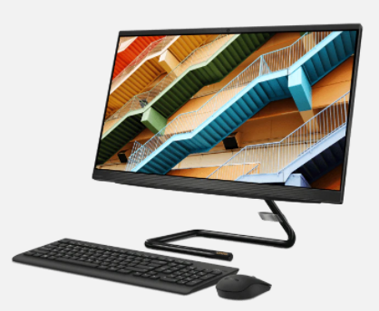
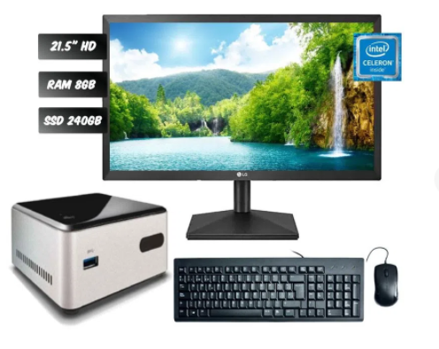
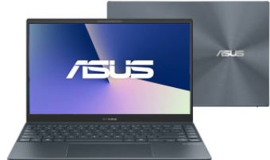
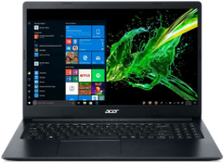
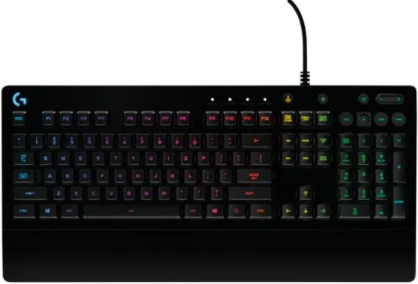
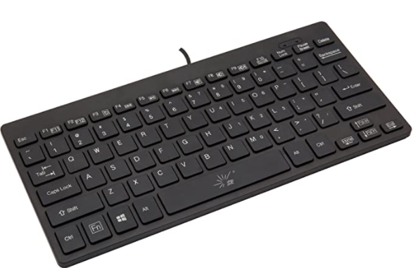
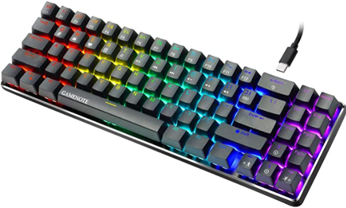
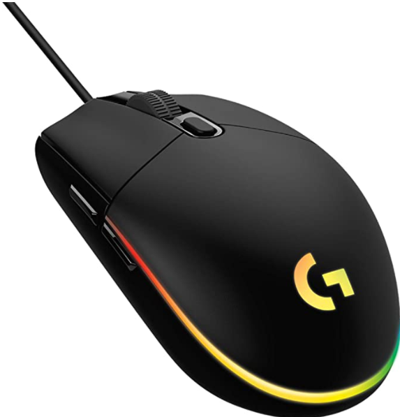
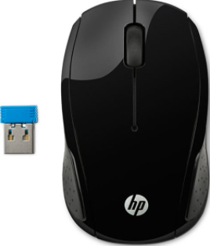
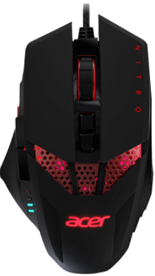

Los productos disponibles son:
(Pulsa sobre la imagen para redirigirte a la página y efectuar la compra)
|  |  |  |  |
|---|---|---|---|
| *Precio: $3.799.901,00 | *Precio: $1.569.000 | *Precio: $3.499.000 | *Precio: $1.399.000 |
| *Procesador: Intel Core i5-10400T | *Procesador: CELERON J4005 | *Procesador: Intel Core i5 1035G1 | *Procesador: Intel Celeron |
| *Sistema operativo: Windows 10 Home Single Languaje 64 | *Sistema operativo: Linux | *Sistema operativo: windows 10 Home 64 | *Sistema operativo: Windows 10 |
| *Velocidad del procesador: 2.0 GHz | *Velocidad del procesador: 2.0 GHz | *Velocidad del procesador: 1.0 GHz | *Velocidad del procesador: 1.10 GHz |
| *Memoria ram: 8 GB DDR4 | *Memoria ram: 8 GB DDR4 | *Memoria ram: 8 GB | *Memoria ram: 4 GB |
| *Almacenamiento: 1 TB 5400 RPM + 256 SSD | *Almacenamiento: 256 GB SSD | *Almacenamiento: 256 GB SSD | *Almacenamiento: 500 GB HDD |
Teclados disponibles:
(Pulsa sobre la imagen para redirigirte a la página y efectuar la compra)
|  |  |  |
|---|---|---|
| *Precio: $259.900 | *Precio: $51.982,97 | *Precio: $120.013,03 |
| *Caracteristicas: Este teclado gaming está equipado con las teclas G Mech-Dome que es principalmente para recibir una respuesta superior e igual a un teclado mecánico. |
*Caracteristicas: Es un teclado mini para ordenador ultraligero con 78 teclas en total |
*Caracteristicas: Gamenote, un teclado mecánico con 71 letras y retroiluminación led, ideal para un pc gamer. |
Mouse disponibles:
(Pulsa sobre la imagen para redirigirte a la página y efectuar la compra)
|  |  |  |
|---|---|---|
| *Precio: $112.009,49 | *Precio: $29.900 | *Precio: $99.000 |
| *Caracteristicas: El mouse gamer Logitech G203, es un mouse cableado con RGB ideal para aquellas personas que se quieran adentrar al mundo gaming o para sus tareas de oficina. |
*Caracteristicas: Es un mouse inalambrico a un muy buen precio tiene un diseño contornadopara usarlo con ambas manos. |
*Caracteristicas: Con este mouse, podrás ajustar la velocidad del cursor, para que así lo tengas a tu preferencia. Es de color negro y contiene luces LED. |